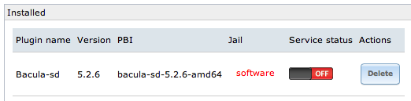

FreeNAS upgraded to 9.1, unable to delete old jails
I just ran the FreeNAS upgrade from 8.3 to 9.1. FreeNAS 9.1 adds the capability to run multiple jails (awesome feature by the way, thanks). After upgrading there was the usual slew of minor UI changes. I had installed bacula earlier but never got around to configuring it, and hence wanted to remove/start fresh.
Unfortunately the jails did not migrate so cleanly on the UI. Additionally when I attempted to remove the installed bacula plugin it resulted in an error saying the jail does not exist.

The above screenshot is taken after the migration command was run. Before this the “jail” field was blank.
Long story short… FreeNAS does not automagically migrate plugins when upgrading from 8.x to 9.x. You will need to run the follow command in the FreeNAS console documented here:1
/root/migrate_pluginjail.sh -D
I’m not sure why the would not automatically migrate plugins during the upgrade. The document hints that this may be due to binary incompatibility between the versions. Any readers that actually know… feel free to update me in the comments!